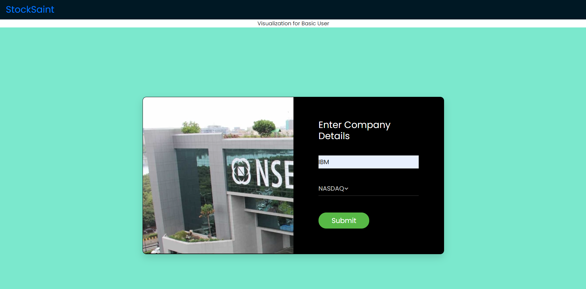
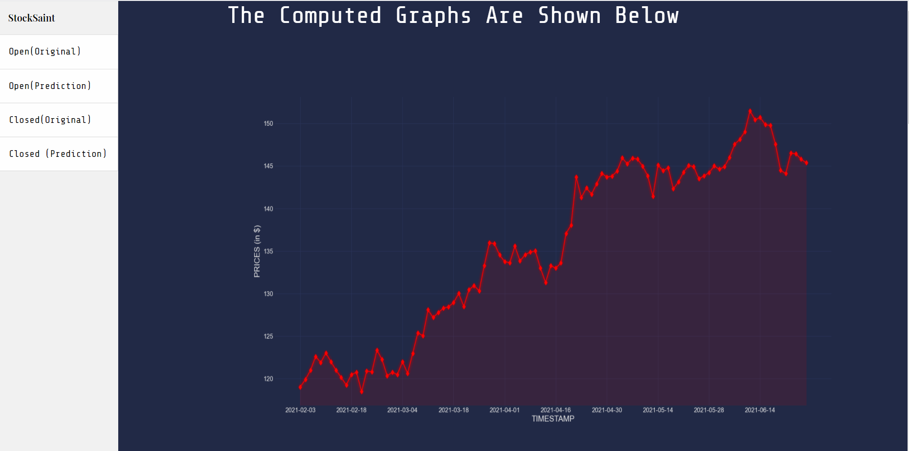
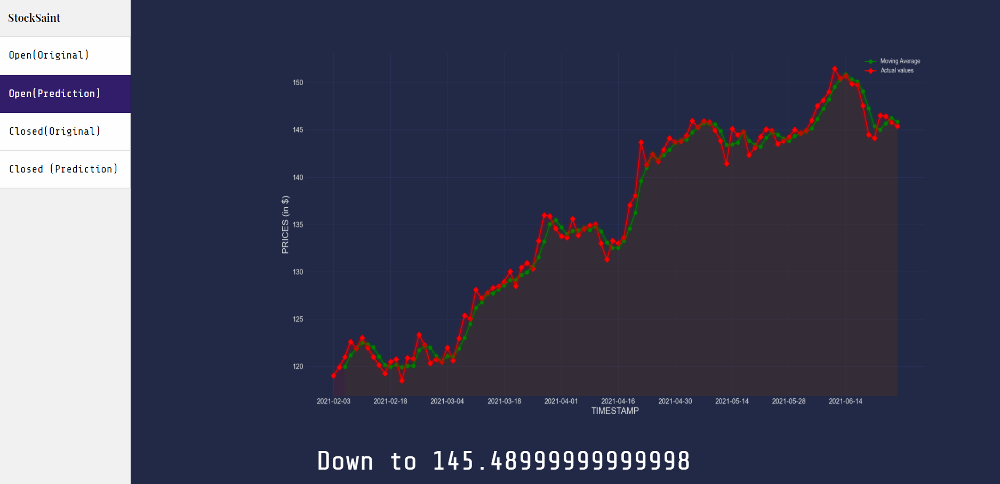
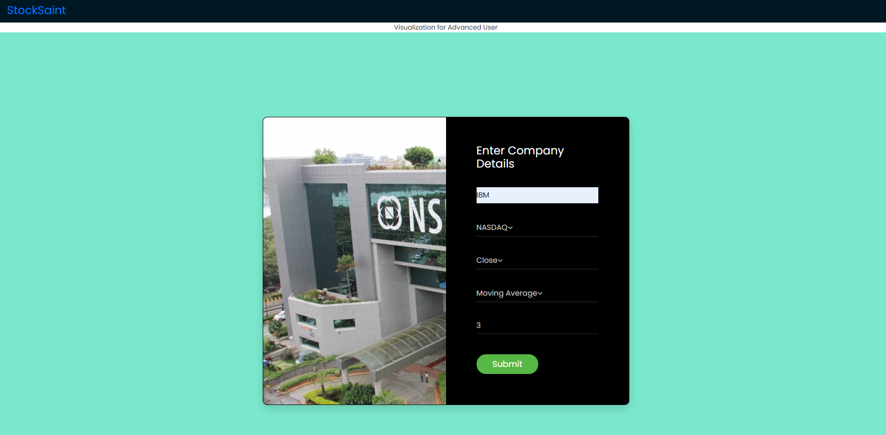
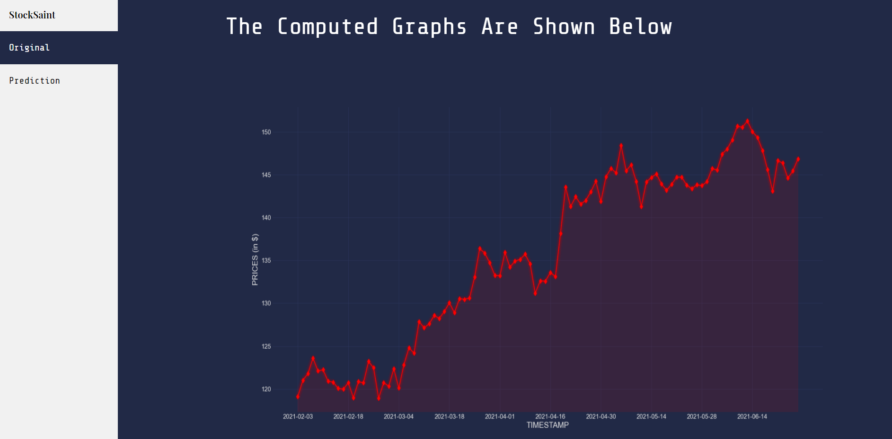

StockSaint is a free, online Stock Market based Responsive Web-Application. It allows users to Visualize, Analyse and Predict the Stock Market Movements based on some commonly used Market Dynamics. Our Goal is to generate the best yet simple visualizations for any person who is a Novice or an Advanced in Stock Analysis.
1Bit-Developers
StockSaint has been developed by 1Bit-Developers. We are a group of 4 hardworking people who are completely open to new ideas, challenges and feedbacks. We want to serve better to our users by designing what we value and believe in. We like to work with people who are hardworking and passionate towards their area of work.
Site Usage
StockSaint offers analysis charts for 2 main types of users- Basic and Advanced.
We offers 5 Market Dynamics to the users for analysis and visualization:
Open
Depicts the Opening Price of the Stock.
Opening price is the price at which a security first trades upon the opening of an exchange on a trading day
Close
Depicts the Closing Price of the Stock.
Closing price refers to the last price at which a stock trades during a regular trading session.
High
Depicts High Stock Price value.
Highest closing price of a stock over a span of time, adjusted for any stock splits, or the highest intraday price of a stock in the most recent (or current) trading session.
Low
Depicts Low Stock Price value.
The day's lowest price of a security that has changed hands between a buyer and a seller.
Volume
Depicts the Traded Volume of the Stock.
Volume is the daily number of shares of a security that change hands between a buyer and a seller. Also known as volume traded.
For both type of users, we need 2 things in common-
Stock Symbol (or Ticker)
A Stock Symbol is an arrangement of characters—usually letters—representing publicly-traded securities on an exchange.
When a company issues securities to the public marketplace, it selects an available symbol for its shares, often related to the company name.
Like Ticker for Amazon is AMZN, Google is GOOGL and for Apple is AAPL.
Stock Exchange
A Stock Exchange where stockbrokers and traders can buy and sell securities, such as shares of stock, bonds, and other financial instruments.
It facilitates the transfer of funds between investors and businesses, regulating as necessary to provide maximum safety for everyone's investments.
Examples are NSE(National Stock Exchange of India), BSE, NASDAQ, NYSE etc.
User Type:
Basic
Basic User is one who does not have much of a knowledge about Stock Market and its Dynamics.
For these types of users, we have given the functionality to generate 2 major plots- Closing and Opening Prices.
For generating these plots, user only needs to know 2 things- Stock Symbol and Stock Exchange.
See below:
Let's say Basic user wants to generate the Original and Trend Line Plot of IBM which comes under NASDAQ Stock Exchange. 1) Filling the Data

2) Generating the Original and Prediction Graphs


Advanced
Advanced User is one who has descent amount of knowledge about Stock Market, its Dynamics and their importance.
For these types of users, we have given the functionality to generate 5 dynamic plots- Closing, Opening, High, Low Prices and Volume traded.
For generating these plots, user needs to know 5 things-
Stock Symbol
Stock Exchange
Prediction Type - What kind of plot and their Visulization user wants i.e. Opening, Closing, High, Low or Volume.
Technique - What Technique to use for Plotting, Moving Average or Exponential Smoothing. Moving Average Method stores a running mean of some of the previous elements similar to Sliding Window to predict the trend of the Plot.
Exponential Smoothing technique works on the simple principle by giving more weightage to the recent data and less to the previous data. It is really a powerfull technique and may be used as an alternative to Box-Jenkins ARIMA family of methods.
Window Size - Positive Integer value denoting the size of the window to use for plotting the trend line and estimating predictions i.e. How many previous values to consider for plotting the trends. Window Size of 2-3 is really good for more accurate plotting purposes.
See below:
Let's say Advanced user wants to generate the Original and Trend Line Plot of IBM which comes under NASDAQ Stock Exchange.
User wants to plot "Closing Price Value" Plots with a Window Size = 3 using "Moving Average" technique. 1) Filling the Data

2) Generating the Original and Prediction Graphs
